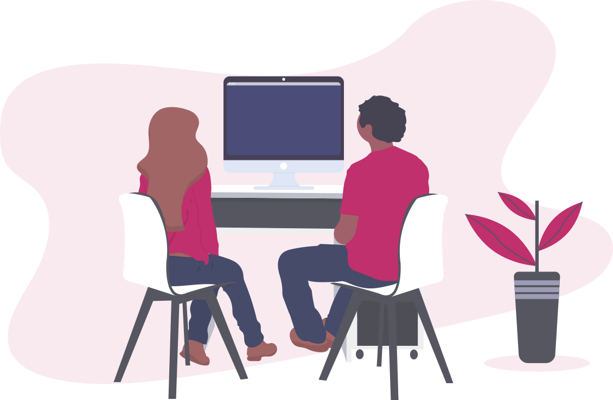

Digital crafting, website creation and IT outsourcing services
At Clic2000 we care about building and manage projects in close partnership with our clients. You know us, we meet and build your digital project together, from the development to production.
We mainly work with FLOSS & open source software. It's custom made, every project is unique.